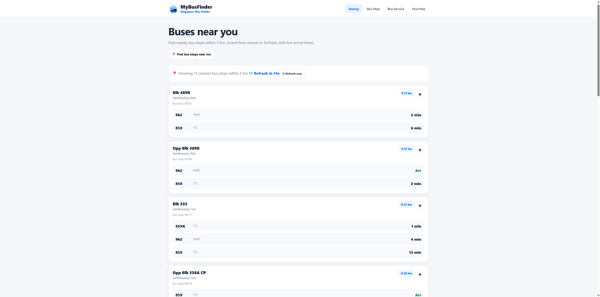

SELECTED PROJECTS
WORK / 2026Different problems. Different systems.
Four projects across product design, AI, responsive experiences and visual identity — each shaped by a different problem, but the same focus on clarity, interaction and execution.
↓UI/UX · PRODUCT DESIGN · DEVELOPMENT
2026MyBus Finder.
A responsive Singapore bus information product designed around a simple need: finding the right transport information quickly when you're already on the move.
WHAT IT SHOWS

AI PRODUCT · UI/UX · DEVELOPMENT
AIPrompt Checker.
An AI prompt evaluation and generation product exploring how feedback, guidance and interface design can make prompting easier to understand and improve.
WHAT IT SHOWS

UI/UX · RESPONSIVE WEB DESIGN · VISUAL DIRECTION
REDESIGNSingapore National Paralympics Council.
A responsive website redesign focused on making para sport, athlete, event and organisational information clearer while giving the digital experience a stronger visual identity.
WHAT IT SHOWS

BRAND IDENTITY · WEB DESIGN · VISUAL DIRECTION
VISUALEternal Shutterwave.
A photography brand built around emotion, memory and visual storytelling — extending one identity across the website, print and social communication.
WHAT IT SHOWS

FOUR PROJECTS. FOUR DIFFERENT PROBLEMS.